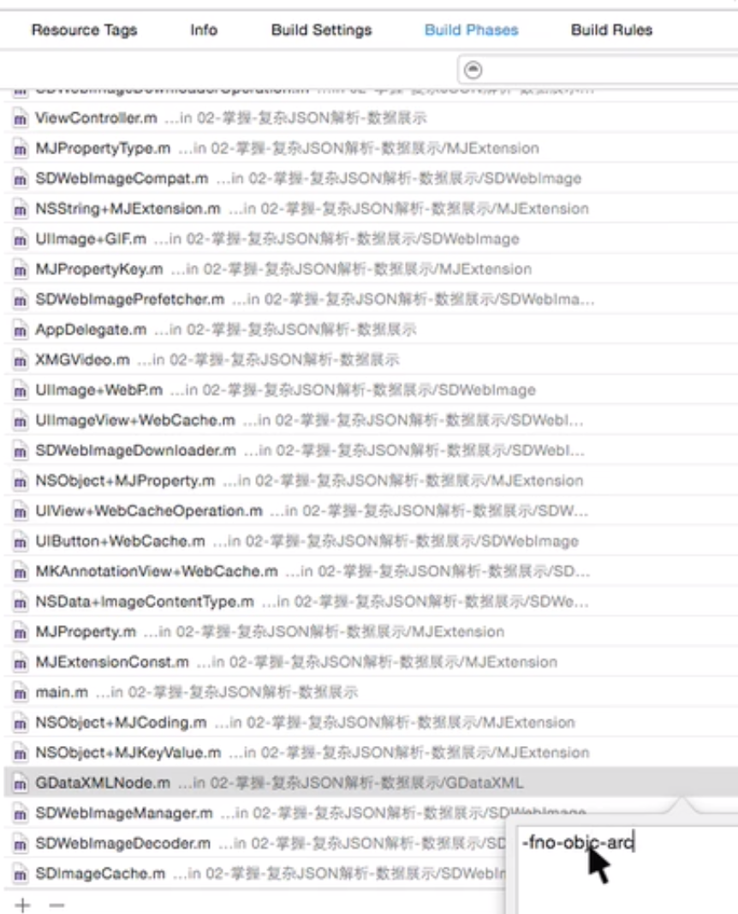

iOS 基础知识
1.
xcode
2.
出现的问题解决方法
3.
OC的一些代码功能
4.
第三方框架 管理 与 使用
5.
终端命令功能
6.
第三方辅助软件使用
Published using GitBook
A
A
Serif
Sans
White
Sepia
Night
Twitter
Google
Facebook
Weibo
Instapaper
iOS 基础知识
xcode快捷键
搜索弹出一个过滤框：
shift + command + O
选择的一块代码向上或向下快捷键：
上移：option + command + [
下移：option + command + ]
快速创建一个类文件
command + N
快速创建一个项目
shift + command + N
Xcode 项目中，xib 内控件拖线到邦定的类文件中
control + 拖动
xcode 配制
某个类文件需要使用非ACR环境 配制
